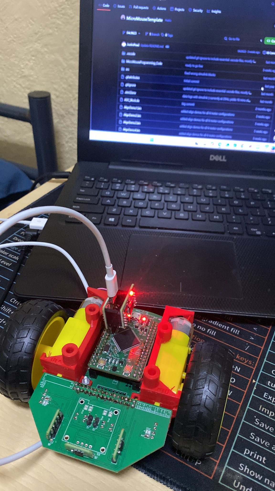

ROBOTICS / CONTROL 01MATLAB · SIMULINK · PID · SENSORS
MicroMouse Power & Control
A multidisciplinary robotics project involving sensing, motor control, power electronics and autonomous navigation.
Encoder feedbackGyro correctionPID control